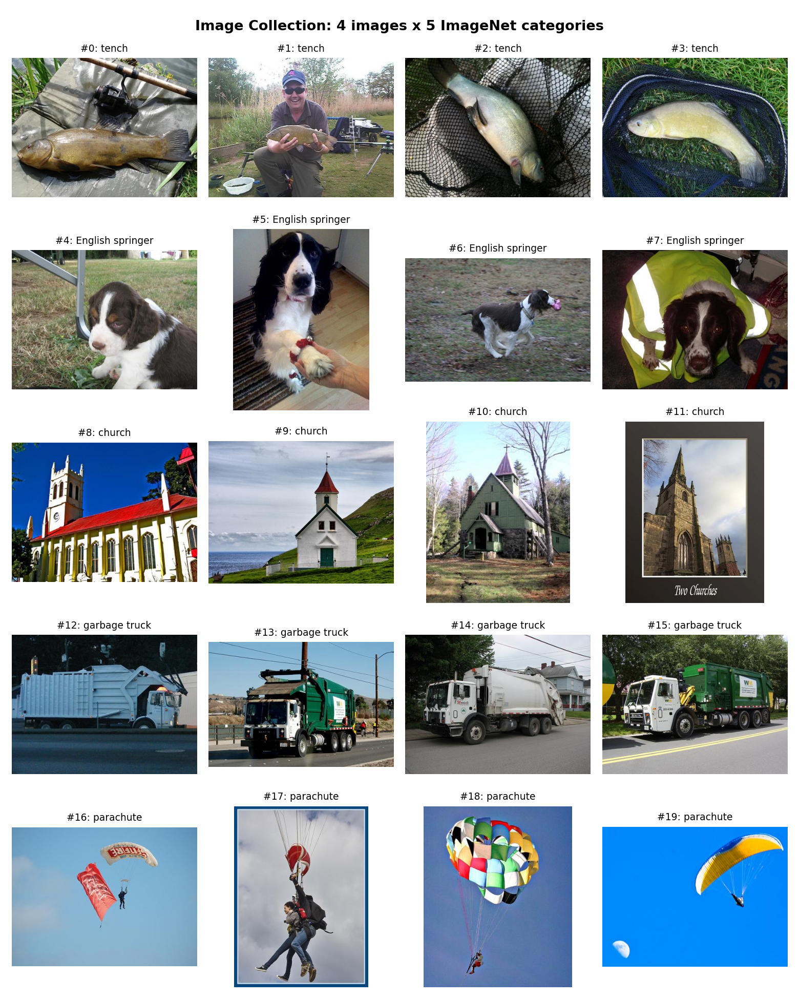
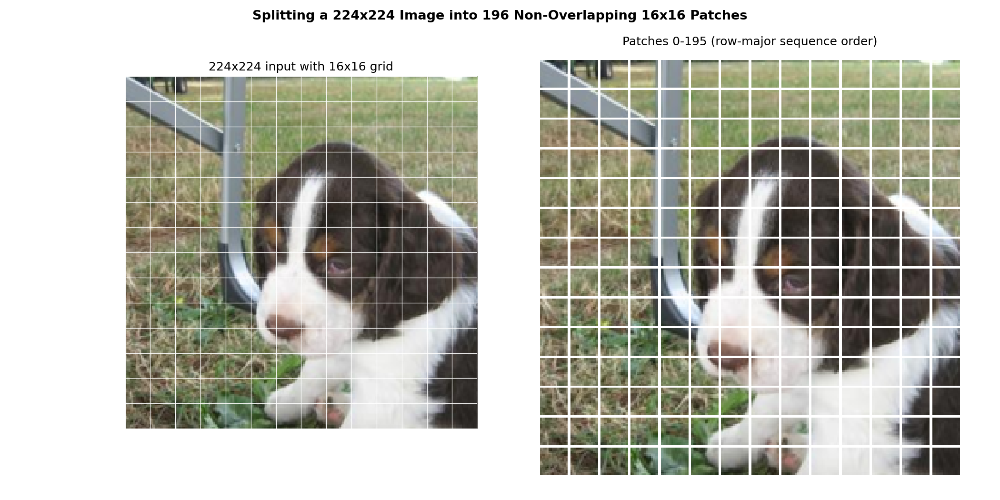
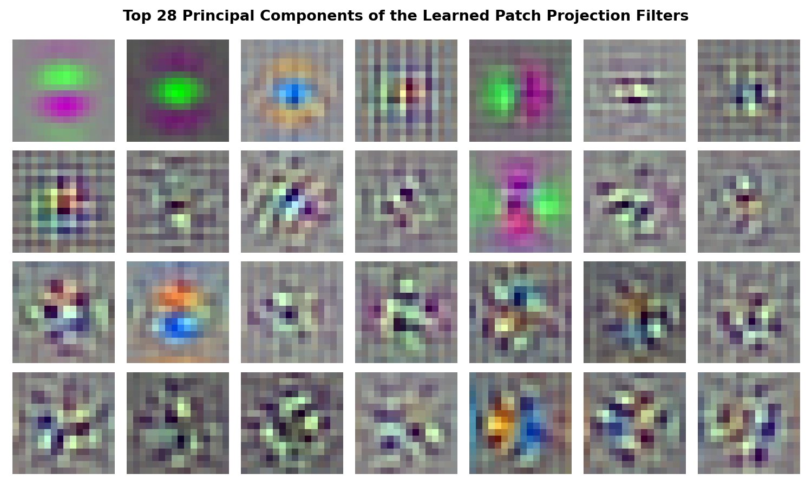
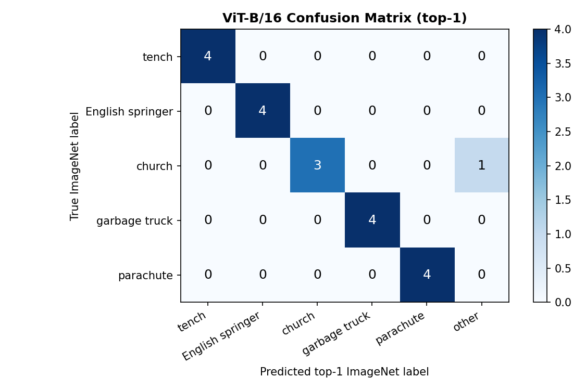
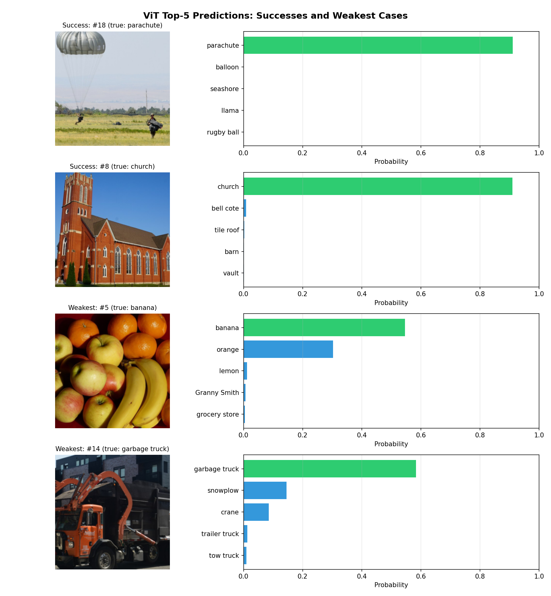
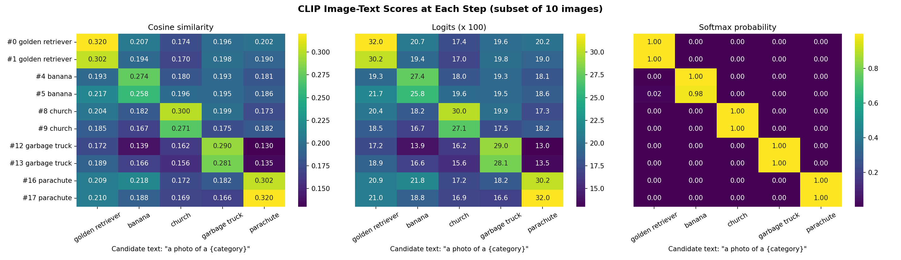
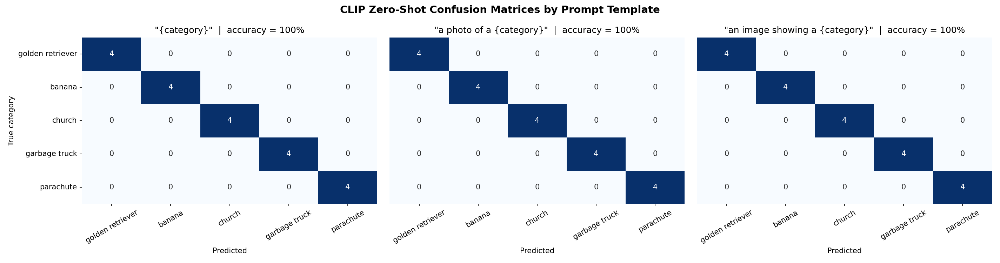
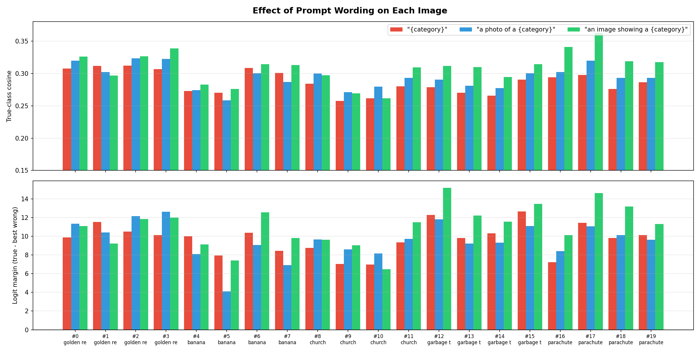
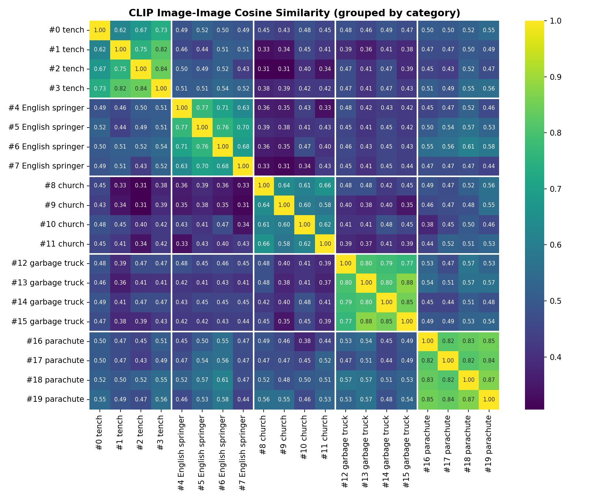
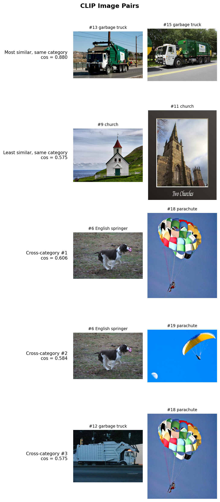

Objective
This project looks at two pretrained models without training or fine-tuning either one. Part 1 opens up a Vision Transformer (ViT): how an image becomes a sequence of patch tokens, and what a classifier with a fixed set of 1000 ImageNet labels can and cannot answer. Part 2 uses CLIP, which compares images with free-text descriptions: I implement its similarity computation, test how prompt wording affects zero-shot classification, and explore which images CLIP considers similar.
Both parts use the same collection of 20 images, so the two models can be compared directly. The focus is on understanding the computations and analyzing the results.
Setup
Models and Environment
| Item | Value |
|---|---|
| Part 1 checkpoint | torchvision vit_b_16, ViT_B_16_Weights.IMAGENET1K_V1 |
| Part 1 preprocessing | Checkpoint transform: resize 256 (bilinear), center crop 224, ImageNet mean/std normalization |
| Part 2 checkpoint | OpenAI CLIP ViT-B/32 (converted to float32 after loading) |
| Part 2 preprocessing | CLIP transform: resize 224 (bicubic), center crop 224, CLIP mean/std normalization |
| Packages | Python 3.11.15, PyTorch 2.12.0 (nightly, CUDA 12.8), torchvision 0.26.0 (nightly), CLIP 1.0, NumPy, pandas, matplotlib, seaborn |
| Device | NVIDIA GeForce RTX 5060 Laptop GPU (inference only) |
| Reproducibility | Fixed seed 42; image embeddings and model outputs saved to disk so the encoders are not re-run |
Image Collection
The collection has 20 images: 4 from each of 5 categories. The images come from
Imagenette, a 10-class subset of ImageNet released by fast.ai and downloaded with
torchvision.datasets.Imagenette. Every Imagenette class is an actual ImageNet-1k class,
so the label mapping to the ViT's output is exact.
| Category | ImageNet index | WordNet ID | Image IDs |
|---|---|---|---|
| tench (a freshwater fish) | 0 | n01440764 | #0-#3 |
| English springer (a spaniel breed) | 217 | n02102040 | #4-#7 |
| church | 497 | n03028079 | #8-#11 |
| garbage truck | 569 | n03417042 | #12-#15 |
| parachute | 701 | n03888257 | #16-#19 |
Selection rules: the five categories are visually distinct (a fish, a dog breed, a building,
a vehicle, and an object in the sky). Imagenette's validation folder also contains ImageNet
training images, which the ViT has already seen, so I only used official ImageNet validation
images (ILSVRC2012_val_*.JPEG). Four images per category were sampled with a fixed seed.
Sources and permissions: the images are subject to the ImageNet terms of access (non-commercial research and educational use). They are downloaded at run time and are not redistributed with the code. The figures on this page show them for educational analysis only.

Part 1: Understanding a Pretrained Vision Transformer
Task 1: Image patches and model inputs.
ViT-B/16 does not look at an image as a grid of pixels. It splits the image into non-overlapping
16 x 16 patches and processes them as a sequence of tokens, like words in a sentence.
I wrote my own split_into_patches() function, which reshapes a (C, H, W) tensor
into (N, C, 16, 16) in row-major order, the same order the model uses.
Number of Patches and Sequence Length
sequence length = 196 patches + 1 CLS token = 197 tokens, each of dimension D = 768

Tracing the Input Stage
Running one preprocessed image through the input stage of the model confirms these shapes:
| Stage | Shape |
|---|---|
| Preprocessed image | (1, 3, 224, 224) |
Patch projection (conv_proj: Conv2d 3 -> 768, kernel 16, stride 16) | (1, 196, 768) |
| CLS token | (1, 1, 768) |
| Positional embeddings | (1, 197, 768) |
| Sequence fed to the transformer encoder | (1, 197, 768) |
Roles of the Input Components
Patch projection: each 16 x 16 x 3 patch (768 pixel values) is mapped to a 768-dimensional token by a learned linear layer. torchvision implements it as a convolution with kernel size and stride 16, which is mathematically the same as flattening each patch and multiplying it by a learned weight matrix.
Positional embeddings: self-attention treats its input as an unordered set, so on its own the model would not know where a patch came from. A learned vector for each of the 197 positions is added to its token, so the spatial layout is available to the model.
CLS token: a learned vector placed at position 0. It contains no image content of its own. Through attention it gathers information from all patches, and its final hidden state is the only input to the classification head.
My Patch Visualization vs. the Learned Patch Projection
My patch function only rearranges pixels. It has no parameters, and each patch is still a small image.
The model's patch projection is a learned map. To show the link, I applied conv_proj's
weights by hand to my own patches (flatten, then a matrix multiply). The result matched the model's tokens up
to float rounding (maximum difference 4.8e-6).
Individual learned filters are hard to interpret, because the 768 output dimensions are an arbitrary basis. Following the ViT paper (Dosovitskiy et al., 2021), Figure 3 instead shows the top principal components of the 768 filters. These 28 components explain 41.7% of the filters' variance.

Discussion
The two visualizations show different things. My patches are pixels: you can still see grass, the fence post, and the puppy's ear. The projection filters are learned feature detectors. The leading components are smooth, low-frequency patterns: green/magenta and blue/orange color-opponent blobs, and horizontal and vertical stripes. They look much like the first-layer filters of a CNN.
A projected token therefore no longer stores what a patch looks like pixel by pixel. It stores how strongly the patch matches each learned pattern (color contrast, edges at certain orientations). Everything after this point in the transformer works on these 196 feature vectors, plus the CLS token and positional information, not on the image itself.
Task 2: Predictions on a small image collection.
Each image was preprocessed with the checkpoint's own transform and classified over all 1000 ImageNet classes. A top-1 prediction counts as correct only if it is exactly the mapped ImageNet class.
Top-5 Predictions
| ID | True label | Top-5 predictions (probability) | Top-1 |
|---|---|---|---|
| #0 | tench | tench (0.88) | garden spider (0.00) | necklace (0.00) | tick (0.00) | barracouta (0.00) | Correct |
| #1 | tench | tench (0.89) | barracouta (0.00) | monarch (0.00) | sulphur butterfly (0.00) | goldfish (0.00) | Correct |
| #2 | tench | tench (0.85) | coho (0.02) | barracouta (0.00) | sturgeon (0.00) | gar (0.00) | Correct |
| #3 | tench | tench (0.90) | barracouta (0.00) | eel (0.00) | monarch (0.00) | polecat (0.00) | Correct |
| #4 | English springer | English springer (0.83) | Brittany spaniel (0.01) | cocker spaniel (0.00) | Welsh springer spaniel (0.00) | wire-haired fox terrier (0.00) | Correct |
| #5 | English springer | English springer (0.85) | cocker spaniel (0.01) | Welsh springer spaniel (0.01) | clumber (0.00) | English setter (0.00) | Correct |
| #6 | English springer | English springer (0.90) | Welsh springer spaniel (0.00) | Brittany spaniel (0.00) | Lakeland terrier (0.00) | miniature schnauzer (0.00) | Correct |
| #7 | English springer | English springer (0.49) | Brittany spaniel (0.31) | English setter (0.01) | Welsh springer spaniel (0.01) | Border collie (0.01) | Correct |
| #8 | church | church (0.78) | monastery (0.08) | bell cote (0.01) | cinema (0.00) | palace (0.00) | Correct |
| #9 | church | church (0.70) | beacon (0.19) | bell cote (0.01) | monastery (0.01) | boathouse (0.00) | Correct |
| #10 | church | bell cote (0.57) | boathouse (0.13) | church (0.13) | barn (0.01) | lakeside (0.00) | Wrong |
| #11 | church | church (0.78) | bell cote (0.07) | vault (0.01) | monastery (0.01) | castle (0.00) | Correct |
| #12 | garbage truck | garbage truck (0.89) | trailer truck (0.01) | mobile home (0.00) | moving van (0.00) | tow truck (0.00) | Correct |
| #13 | garbage truck | garbage truck (0.90) | snowplow (0.00) | trailer truck (0.00) | ashcan (0.00) | crane (0.00) | Correct |
| #14 | garbage truck | garbage truck (0.91) | trailer truck (0.00) | snowplow (0.00) | tow truck (0.00) | ashcan (0.00) | Correct |
| #15 | garbage truck | garbage truck (0.92) | crane (0.00) | trailer truck (0.00) | snowplow (0.00) | tow truck (0.00) | Correct |
| #16 | parachute | parachute (0.92) | airship (0.00) | seashore (0.00) | balloon (0.00) | llama (0.00) | Correct |
| #17 | parachute | parachute (0.82) | balloon (0.02) | jean (0.00) | unicycle (0.00) | llama (0.00) | Correct |
| #18 | parachute | parachute (0.92) | balloon (0.00) | airship (0.00) | llama (0.00) | warplane (0.00) | Correct |
| #19 | parachute | parachute (0.91) | umbrella (0.00) | seashore (0.00) | balloon (0.00) | flagpole (0.00) | Correct |
Accuracy
| Metric | Result |
|---|---|
| Top-1 accuracy (1000 classes) | 95% (19/20) |
| Top-5 accuracy (1000 classes) | 100% (20/20) |
| Per-category top-1 | church 3/4, all others 4/4 |


Discussion: Successes
#16 parachute (0.92): a canopy and skydiver against a plain blue sky. The object is large, centered, and typical for its class. The other top-5 entries are near zero. Several of them (airship, balloon) are other objects seen against the sky, which suggests the background context also counts.
#15 garbage truck (0.92): a side view of a large truck with a compactor body. All the runner-ups are heavy vehicles (crane, trailer truck, snowplow, tow truck). Even the near-zero alternatives make sense, so the model's ranking is meaningful beyond the top-1 label.
Even on easy images, the top probability never rises above about 0.92. That is consistent with the checkpoint's training recipe, which used label smoothing and mixup. Both keep some probability on other classes, even when the model is confident.
Discussion: Incorrect and Uncertain Examples
#10 church -> bell cote (0.57): this is the only top-1 error. The image shows a small green wooden church in a forest with a prominent rooftop bell tower. "Bell cote" is the ImageNet class for that small bell tower, so the model labeled the most distinctive part of the building rather than the building itself. It ranks church third (0.13), just behind boathouse (0.13). The wooden siding and wooded setting do not look like a typical stone or white church. The image really does show both a church and a bell cote. Single-label evaluation counts that as an error, even though the answer is visually justified.
#7 English springer (0.49 vs. Brittany spaniel 0.31): this prediction is correct but split between two very similar breeds. A yellow hi-vis jacket covers the dog's body, so only the liver-and-white face is visible, and Brittany spaniels share that coloring. Fine-grained breed recognition depends on cues that are hidden here, such as coat pattern and body shape.
How a Fixed Label Set Limits the Questions We Can Ask
The ViT's head is one linear layer from the 768-dimensional CLS state to 1000 fixed ImageNet logits. That limits what the model can answer:
- It can only answer one question: "which of these 1000 classes is this?" A question like "is there a person?", "what is the dog doing?", "how many trucks are there?", or "what color is the parachute?" has no output to read. Answering it would need a new head and new training.
- Unseen concepts are forced into known labels. Image #19 is actually a paraglider: a rectangular wing flown from a seat harness, not a round parachute. ImageNet has no paraglider class, so the model says "parachute" with 0.91 probability. It cannot say "none of these". Softmax always sums to 1 over the 1000 classes, so a high probability does not mean the image belongs to any of them.
- The granularity is fixed by the dataset. ImageNet has about 120 dog breeds but no plain "dog" class, and one "church" class with no notion of style or interior vs. exterior.
- The labels carry dataset context. "Tench" photos in ImageNet are mostly anglers holding up the fish (as in #1), so the label partly stands for that whole scene.
Part 2 removes this limit: CLIP compares an image against free-text candidates, so the label set can change without any retraining.
Part 2: CLIP for Image-Text Matching and Zero-Shot Classification
Task 1: Implement the similarity calculation.
CLIP has separate image and text encoders that map their inputs into a shared 512-dimensional space. I used only the two encoders from the library, and implemented the rest of the pipeline myself:
2. Cosine similarity: S[i, j] = u_hat_i . v_hat_j (for all pairs: U_hat V_hat^T)
3. Logits: z[i, j] = s * S[i, j], s = exp(logit_scale)
4. Softmax over texts: p[i, j] = exp(z[i, j]) / sum_k exp(z[i, k]); prediction = argmax_j p[i, j]
Comparison with CLIP's Built-in Output
| Check | Result |
|---|---|
Learned logit scale s = exp(logit_scale) | exp(4.6052) = 100.00 |
| Max |my logits - built-in logits| (20 images x 5 texts) | 7.6e-6 |
| Same predicted class for every image | Yes (20/20) |
Zero-shot accuracy, a photo of a {category} | 100% (20/20) |
CLIP loads in half precision (float16) on the GPU. I converted it to float32 so that my computation and the built-in one could be compared without rounding noise. The remaining difference is ordinary floating-point error.

Cosine Similarities vs. Logits vs. Softmax Probabilities
Cosine similarity measures raw image-text agreement: the angle between two unit vectors. CLIP's image-text values sit in a narrow band (about 0.10-0.32 here), far below 1. The correct prompt usually leads by only 0.08-0.15.
Logits are the same numbers multiplied by the learned scale s = 100. The ranking is
unchanged, but the gaps grow: a 0.1 cosine gap becomes a 10-unit logit gap. The scale is a temperature that CLIP learned
during training to make its contrastive softmax sharp.
Softmax probabilities turn each row of logits into a distribution over the candidate texts that sums to 1. Because of the large scale, a small cosine gap becomes a near-certain probability (every row in Figure 6 rounds to 1.00).
Why Softmax Probabilities Depend on the Candidate Texts
To test this directly, I kept the image (#7, the springer in the hi-vis jacket) and the encoders fixed, and changed only which prompts were compared:
| Candidate text | Cosine | P (5 categories) | P (springer removed) | P (+ "dog") |
|---|---|---|---|---|
| a photo of a tench | 0.200 | 0.001 | 0.716 | 0.001 |
| a photo of a English springer | 0.265 | 0.998 | - | 0.976 |
| a photo of a church | 0.145 | 0.000 | 0.003 | 0.000 |
| a photo of a garbage truck | 0.177 | 0.000 | 0.072 | 0.000 |
| a photo of a parachute | 0.187 | 0.000 | 0.209 | 0.000 |
| a photo of a dog | 0.227 | - | - | 0.022 |
The cosine column never changes, because the image and each text are encoded independently. Only the softmax normalization changes. When the correct text is removed, CLIP does not become uncertain: it puts 72% on "tench", even though that cosine (0.200) is well below the true label's (0.265). Tench is simply the least-bad remaining option. Adding "a photo of a dog", which is also correct but more generic, takes some probability away from "English springer".
The same image can therefore be reported with 99.8%, 0%, or 97.6% confidence for the same label, depending only on what it is compared against. A CLIP probability is a share of the candidate set, not an absolute measure of how well an image matches a sentence.
Task 2: Compare prompt wording.
I evaluated the frozen model with three prompt templates for the five categories. The image embeddings were computed once and reused, so only the text fed to the text encoder changes.
| Template | Accuracy | Mean true-class cosine | Mean logit margin | Min logit margin |
|---|---|---|---|---|
{category} | 100% | 0.282 | 8.98 | 5.67 |
a photo of a {category} | 100% | 0.299 | 11.05 | 6.52 |
an image showing a {category} | 100% | 0.308 | 11.42 | 6.89 |
The logit margin is the true-class logit minus the highest wrong-class logit. It is positive when the prediction is correct, and larger means more decisive. I report it because the softmax probabilities saturate near 1.0 on these easy categories and hide most of the effect of wording.


Examples Where Wording Changes the Score
| Image | Margin {category} | Margin a photo of a ... | Margin an image showing a ... | Prediction |
|---|---|---|---|---|
| #18 parachute | 7.88 | 11.81 | 13.30 | parachute (all) |
| #15 garbage truck | 11.65 | 14.85 | 16.80 | garbage truck (all) |
| #3 tench | 9.98 | 14.57 | 14.53 | tench (all) |
| #4 English springer | 9.09 | 8.50 | 7.21 | English springer (all) |
| #16 parachute | 9.15 | 7.80 | 9.65 | parachute (all) |
Discussion
No prediction changes. All three templates classify all 20 images correctly. These five categories are visually distinct, so any reasonable wording separates them.
The scores do change, consistently. The bare {category} template has the lowest true-class
cosine and the smallest margins. Wrapping the label in a sentence raises the mean margin by about 2-2.5 logits.
This matches the CLIP paper's observation: the training captions are sentences, so a sentence-like prompt is closer
to what the text encoder learned from. The largest gains are on parachutes and garbage trucks. For example, #18's
margin goes from 7.9 to 13.3.
The effect is not uniform. For #4 the bare template has the largest margin, and for #16 "a photo of a" is the weakest of the three. No single template is best for every image. All templates also produce the ungrammatical "a photo of a English springer"; I did not test whether the article matters.
Why Changing a Prompt Is Not Fine-Tuning
In zero-shot CLIP, the encoded prompts are the classifier: each class's weight vector is its text embedding. Changing the wording changes those class vectors, but no model parameter changes. There is no gradient step and no labeled training data, and the change is instantly reversible. The image embeddings were identical across all three templates. Fine-tuning would update the encoder weights by gradient descent on labeled examples. That changes the representation of every input, needs data and compute, and can overfit or weaken the model's general zero-shot ability.
Comparison with Part 1
| Category | ViT top-1 (1000 classes) | CLIP, each template (5 texts) |
|---|---|---|
| tench | 4/4 | 4/4 |
| English springer | 4/4 | 4/4 |
| church | 3/4 | 4/4 |
| garbage truck | 4/4 | 4/4 |
| parachute | 4/4 | 4/4 |
| Overall | 95% | 100% |
These two numbers measure different tasks, so they should not be read as a ranking:
- Different candidate sets: ViT chooses among 1000 classes, while CLIP here only chooses among 5 texts, which is a much easier problem. ViT's only error (#10 -> "bell cote") was a label CLIP was never offered.
- Different training objectives and data: ViT-B/16 was trained with a supervised classification loss on 1.28M labeled ImageNet images. CLIP was trained with a contrastive image-text objective on about 400M web image-caption pairs, and never saw ImageNet's label list as a training target. Whether these validation images, or near-copies of them, appear in CLIP's web data is unknown.
- Sample size: 20 images are too few to separate 95% from 100%.
The experiment shows that both models handle these clear, typical examples well. It is not evidence that either model is generally better.
Task 3: Explore the representation space.
I computed the image-image cosine similarity matrix from the normalized CLIP image embeddings
(U_hat U_hat^T). Images are ordered by category, so the matrix is grouped into 4 x 4 blocks.

Mean Similarity Between Category Blocks
| tench | springer | church | garbage truck | parachute | |
|---|---|---|---|---|---|
| tench | 0.740 | 0.496 | 0.396 | 0.434 | 0.497 |
| English springer | 0.496 | 0.709 | 0.381 | 0.437 | 0.513 |
| church | 0.396 | 0.381 | 0.616 | 0.416 | 0.488 |
| garbage truck | 0.434 | 0.437 | 0.416 | 0.814 | 0.513 |
| parachute | 0.497 | 0.513 | 0.488 | 0.513 | 0.837 |
Diagonal entries exclude each image's similarity with itself. Mean within-category similarity is 0.743; mean across-category similarity is 0.457.

Discussion: Category Is the Dominant Structure
The heatmap has a clear block-diagonal pattern, and every image's nearest neighbor is in its own category (20/20). In these examples, CLIP's image embedding is organized first by the main object.
Discussion: Similarity Within a Category
Parachute (0.84) and garbage truck (0.81) are the tightest blocks. The parachutes all share a plain sky and a small figure under a canopy. Three of the four trucks are the same green-and-white company truck seen from the side on a road. The most similar pair overall is #13 / #15 (0.88), two near-identical trucks from that company. The white truck photographed at night (#12) is less similar to the others (0.77-0.80). Color, viewpoint, and lighting matter beyond the object category.
Church (0.62) is the loosest block. The four churches differ in material (white wood, stone, green wood), architectural style, and setting. The least similar same-category pair, #9 (a white church by the sea) vs. #11 (a framed print of a stone Gothic church with a caption), scores 0.575. That is about as low as the highest cross-category pairs.
The paraglider (#19) is 0.84-0.87 similar to the real parachutes. CLIP groups it by its overall appearance (a canopy in the sky) and its likely caption, not by the technical difference.
Discussion: Unexpected Cross-Category Similarity
The most similar cross-category pairs are #6 (springer) with #18 and #19 (parachutes), at 0.61 and 0.58, and #12 (garbage truck) with #18 (0.58). These pairs share no object, color, or background (grass vs. sky). What they share is composition: a single small subject in motion against a large, uniform background. The parachutes are also moderately similar to every other category (0.49-0.51, the highest cross-category averages). One plausible reason is that their simple layout carries little category-specific detail. At the other end, the least similar category pairs are English springer vs. church (0.38) and tench vs. church (0.40). Close-ups of animals and whole buildings differ in scale, setting, and content all at once.
What CLIP's Representation Captures
In these examples, CLIP mainly encodes what the main object is. That fits training to match captions, which usually name the main subject. Within a category, it also encodes how the scene looks: background, color scheme, viewpoint, and framing. With only four images per category, these are observations about this collection rather than general claims.
Summary
ViT-B/16 converts a 224 x 224 image into 196 patch tokens plus a CLS token. Its learned patch projection acts as a bank of color and edge detectors rather than a pixel copy. On 20 held-out ImageNet images it reached 95% top-1 and 100% top-5 accuracy. Its one error (church -> bell cote) and its confident "parachute" for a paraglider both come from the fixed 1000-class label set.
For CLIP, my implementation of normalization, cosine similarity, logit scaling, and softmax matched the built-in output to about 1e-5. CLIP classified all 20 images correctly with every prompt template. Sentence-style prompts consistently gave larger decision margins than bare labels, without changing any weights. Its probabilities depend entirely on the candidate set: removing the correct label moved 72% of the probability to an unrelated class. In the image embedding space, category is the dominant structure (20/20 nearest neighbors in the same class), with color, viewpoint, and composition shaping similarity within and across categories.